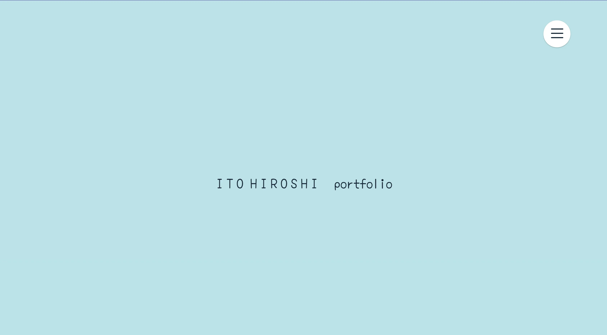
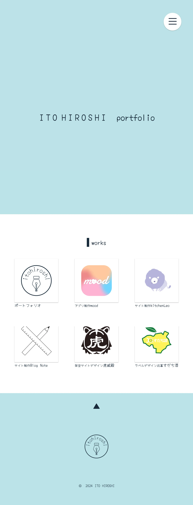

ポートフォリオ

概要
２年生前期集中授業で制作したポートフォリオ。
| 制作時期 | 2024年3月〜 |
| 制作期間 | 1ヶ月 |
| 制作人数 | 個人制作 |
| 使用したもの |
HTML CSS JavaScript Sass Illustrator VisualStudioCode |
| URL | hthttps://hirochan.chillout.jp/portfolio2/ |
使用フォント
「Yomogi」
Google Fontsあいうえおアイウエオ永
ABCDEFGHIJKLMNOPQRSTUVWXYZ
abcdefghijklmnopqrstuvwxyz
この作品のコンセプトが「優しい、柔らかい」なのでこのフォントにしました。
デザイン

前述した通り、コンセプトが「優しい、柔らかい」なので優しい配色、柔らかな感触のアニメーションや装飾をしました。
意識したところ
ハンバーガーメニューの背景をふにゃふにゃと動かすことで柔らかく、面白いアクセントを付けました。
ロゴ
全体的にかわいらしい印象で手書き風なフォントを使っているので、ハートや万年筆をあしらったロゴを作りました。